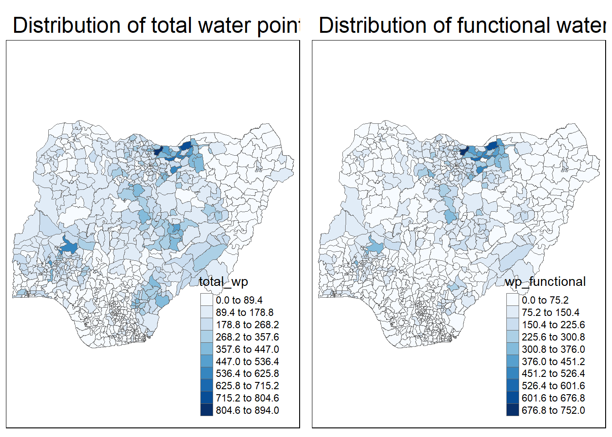

pacman::p_load(tmap, tidyverse, sf)In-class Exercise 3: Analytical Mapping
1 Overview
1.1 Objectives
In this in-class exercise, you will gain hands-on experience on using appropriate R methods to plot analytical maps. For the purpose of this exercise, Nigeria water point data prepared during In-class Exercise 2 will be used.
1.2 Learning Outcome
By the end of this in-class exercise, you will be able to use appropriate functions of tmap and tidyverse to perform the following tasks:
- Importing geospatial data in rds format into R environment.
- Creating cartographic quality choropleth maps by using appropriate tmap functions.
- Creating rate map
- Creating percentile map
- Creating boxmap
2 Getting Started
2.1 Installing and loading packages
2.2 Importing data
NGA_wp <- read_rds("data/rds/NGA_wp.rds")3 Basic Choropleth Mapping
3.1 Visualising distribution of non-functional water point
p1 <- tm_shape(NGA_wp) +
tm_fill("wp_functional",
n = 10,
style = "equal",
palette = "Blues") +
tm_borders(lwd = 0.1,
alpha = 1) +
tm_layout(main.title = "Distribution of functional water point",
legend.outside = FALSE)tm_shape()always takes spatial data, would initially be an empty map with boundarytm_fill()is needed to see smt in the map,n=10means 10 classes,styleprovides the diff views,palettefor colour schemetm_border()to draw boundary,lwdmeans line width,alphais the opacity/transparency of the boundary where 1 is black and 0.1 gets more transparent
p2 <- tm_shape(NGA_wp) +
tm_fill("total_wp",
n = 10,
style = "equal",
palette = "Blues") +
tm_borders(lwd = 0.1,
alpha = 1) +
tm_layout(main.title = "Distribution of total water point",
legend.outside = FALSE)tmap_arrange(p2, p1, nrow=1)
- to place the 2 maps side by side in 1 row
- functional water point (wp) map is a subset of total wp map
- if we look at function wp only, could be misleading since we are plotting absolute value and functional wp is a subset of total wp
- a better way of visualising would be to do distribution by rates
4 Choropleth Map for Rates
In much of our readings we have now seen the importance to map rates rather than counts of things, and that is for the simple reason that water points are not equally distributed in space. That means that if we do not account for how many water points are somewhere, we end up mapping total water point size rather than our topic of interest.
4.1 Deriving Proportion of Function Water Points and Non-Functional Water Points
We will tabulate the proportion of functional water points and the proportion of non-functional water points in each LGA. In the following code chunk, mutate() from dplyr package is used to derive two fields, namely pct_functional and pct_nonfunctional.
NGA_wp <- NGA_wp %>%
mutate(pct_functional = wp_functional/total_wp) %>%
mutate(pct_nonfunctional = wp_nonfunctional/total_wp)4.2 Plotting map of rate
tm_shape(NGA_wp) +
tm_fill("pct_functional",
n = 10,
style = "equal",
palette = "Blues") +
tm_borders(lwd = 0.1,
alpha = 1) +
tm_layout(main.title = "Rate map of functional water point by LGAs",
legend.outside = TRUE)5 Extreme Value Maps
Extreme value maps are variations of common choropleth maps where the classification is designed to highlight extreme values at the lower and upper end of the scale, with the goal of identifying outliers. These maps were developed in the spirit of spatializing EDA, i.e., adding spatial features to commonly used approaches in non-spatial EDA (Anselin 1994).
5.1 Percentile Map
The percentile map is a special type of quantile map with six specific categories: 0-1%,1-10%, 10-50%,50-90%,90-99%, and 99-100%. The corresponding breakpoints can be derived by means of the base R quantile command, passing an explicit vector of cumulative probabilities as c(0,.01,.1,.5,.9,.99,1). Note that the begin and endpoint need to be included.
5.1.1 Data Preparation
Step 1: Exclude records with NA
NGA_wp <- NGA_wp %>%
drop_na()Step 2: Creating customised classification and extracting values
percent <- c(0, .01, .1, .5, .9, .99, 1)
var <- NGA_wp["pct_functional"] %>%
st_set_geometry(NULL)
quantile(var[,1], percent) 0% 1% 10% 50% 90% 99% 100%
0.0000000 0.0000000 0.2169811 0.4791667 0.8611111 1.0000000 1.0000000 - st_set_geometry(NULL) is to drop the geometric field! a MUST to do else quantile() will give an error
- this is because: When variables are extracted from an sf data.frame, the geometry is extracted as well. For mapping and spatial manipulation, this is the expected behavior, but many base R functions cannot deal with the geometry.
5.1.2 Why write functions?
Writing a function has three big advantages over using copy-and-paste:
- You can give a function an evocative name that makes your code easier to understand.
- As requirements change, you only need to update code in one place, instead of many.
- You eliminate the chance of making incidental mistakes when you copy and paste (i.e. updating a variable name in one place, but not in another).
Source: Chapter 19: Functions of R for Data Science.
5.1.3 Creating the get var function
Firstly, we will write an R function as shown below to extract a variable (i.e. wp_nonfunctional) as a vector out of an sf data.frame.
- arguments:
- vname: variable name (as character, in quotes)
- df: name of sf data frame
- returns:
- v: vector with values (without a column name)
get.var <- function(vname, df) {
v <- df[vname] %>%
st_set_geometry(NULL)
v <- unname(v[,1])
return(v)
}- vname - variable name
- df - data frame
5.1.4 A percentile mapping function
percentmap <- function(vnam, df, legtitle=NA, mtitle="Percentile Map") {
percent <- c(0, .01, .1, .5, .9, .99, 1)
var <- get.var(vnam, df)
bperc <- quantile(var, percent)
tm_shape(df) +
tm_polygons() +
tm_shape(df) +
tm_fill(vnam,
title = legtitle,
breaks = bperc,
palette = "Blues",
labels = c("< 1%", "1% - 10%", "10% - 50%", "50% - 90%", "90% - 99%", "99% - 100%")) +
tm_borders() +
tm_layout(main.title = mtitle,
title.position = c("right", "bottom"))
}5.1.5 Test drive the percentile mapping function
percentmap("pct_functional", NGA_wp)- to customise, additional arguments such as title, legend positioning, etc. can be used
5.2 Box Map
In essence, a box map is an augmented quartile map, with an additional lower and upper category. When there are lower outliers, then the starting point for the breaks is the minimum value, and the second break is the lower fence. In contrast, when there are no lower outliers, then the starting point for the breaks will be the lower fence, and the second break is the minimum value (there will be no observations that fall in the interval between the lower fence and the minimum value).
ggplot(data = NGA_wp,
aes(x = "",
y = wp_nonfunctional)) +
geom_boxplot()
Displaying summary statistics on a choropleth map by using the basic principles of boxplot.
To create a box map, a custom breaks specification will be used. However, there is a complication. The break points for the box map vary depending on whether lower or upper outliers are present.
5.2.1 Creating the boxbreaks function
The code chunk below is an R function that creating break points for a box map.
- arguments:
- v: vector with observations
- mult: multiplier for IQR (default 1.5)
- returns:
- bb: vector with 7 break points compute quartile and fences
boxbreaks <- function(v,mult=1.5) {
qv <- unname(quantile(v))
iqr <- qv[4] - qv[2]
upfence <- qv[4] + mult * iqr
lofence <- qv[2] - mult * iqr
# initialize break points vector
bb <- vector(mode="numeric",length=7)
# logic for lower and upper fences
if (lofence < qv[1]) { # no lower outliers
bb[1] <- lofence
bb[2] <- floor(qv[1])
} else {
bb[2] <- lofence
bb[1] <- qv[1]
}
if (upfence > qv[5]) { # no upper outliers
bb[7] <- upfence
bb[6] <- ceiling(qv[5])
} else {
bb[6] <- upfence
bb[7] <- qv[5]
}
bb[3:5] <- qv[2:4]
return(bb)
}5.2.2 Creating the get.var function
The code chunk below is an R function to extract a variable as a vector out of an sf data frame.
- arguments:
- vname: variable name (as character, in quotes)
- df: name of sf data frame
- returns:
- v: vector with values (without a column name)
get.var <- function(vname,df) {
v <- df[vname] %>% st_set_geometry(NULL)
v <- unname(v[,1])
return(v)
}5.2.3 Test drive the newly created function
Lets test the newly created function
var <- get.var("wp_nonfunctional", NGA_wp)
boxbreaks(var)[1] -56.5 0.0 14.0 34.0 61.0 131.5 278.05.2.4 Boxmap function
The code chunk below is an R function to create a box map.
- arguments:
- vnam: variable name (as character, in quotes)
- df: simple features polygon layer
- legtitle: legend title
- mtitle: map title
- mult: multiplier for IQR
- returns:
- a tmap
- element (plots a map)
boxmap <- function(vnam, df,
legtitle=NA,
mtitle="Box Map",
mult=1.5){
var <- get.var(vnam,df)
bb <- boxbreaks(var)
tm_shape(df) +
tm_polygons() +
tm_shape(df) +
tm_fill(vnam,title=legtitle,
breaks=bb,
palette="Blues",
labels = c("lower outlier",
"< 25%",
"25% - 50%",
"50% - 75%",
"> 75%",
"upper outlier")) +
tm_borders() +
tm_layout(main.title = mtitle,
title.position = c("left",
"top"))
}tmap_mode("plot")
boxmap("wp_nonfunctional", NGA_wp)
5.2.5 Recode zero
The code chunk below is used to recode LGAs with zero total water point into NA.
NGA_wp <- NGA_wp %>%
mutate(wp_functional = na_if(
total_wp, total_wp < 0))